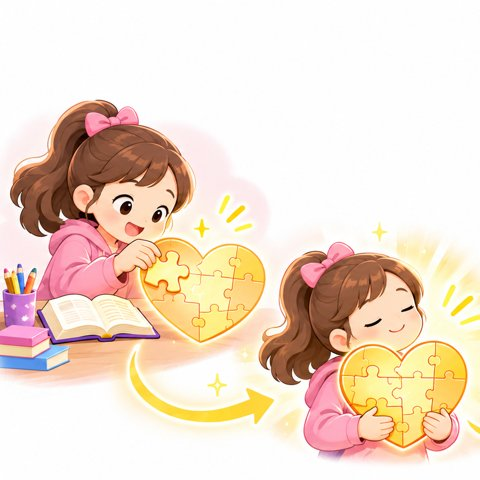

작성한 내용은 이 기기의 현재 브라우저에 자동 저장됩니다. 브라우저 데이터를 삭제하거나 다른 기기·브라우저를 사용하면 보이지 않을 수 있어요.
1주일 말씀 한눈에 보기
징조 · 하나님이 징조를 보여 모두 조심하라고 깨닫게 해 주셔요.
마음 맞추기 · 하나님 마음, 뜻에 맞춰 하면 바로 이상세계예요.
함께 하면 · 하나님과 함께 하면 엄청난 일도 쉽게 해요.
2빈칸을 채워요
보기 단어를 누른 다음 빈칸을 누르면 들어가요. 채운 빈칸을 다시 누르면 단어가 돌아가요.
축소조심수백 배이상세계끝까지
① 하나님이 계시를 보이실 때는 앞날을 해서 보여 주셔요.
② 징조를 보여 모두 하라고 깨닫게 해 주셔요.
③ 하나님과 같이 하면 조금 해도 수고의 대가를 얻어요.
④ 사람이 하나님 마음, 뜻에 맞춰 하면 바로 예요.
⑤ 하나님을 믿고 주와 자기 할 일 해야 문제가 풀려요.
3O, X 퀴즈
맞으면 O, 틀리면 X를 선택하세요.
4주일 말씀에서 배운 점을 써요
5짝을 찾아 선으로 이어요
왼쪽 점을 끌어 알맞은 오른쪽 점에 이어 보세요. 다시 끌면 선을 바꿀 수 있어요.
① 문제가 풀려요
② 수고의 대가를 수백 배 얻어요
③ 모두 조심하라고 깨닫게 해 주는 것
④ 내가 한 것의 천 배, 만 배도 넘어요
⑤ 바로 이상세계가 돼요
6초성 퀴즈
힌트를 보고 맞혀 보세요.
7하나님께 내 시간을 맞춰요

예) 주일 예배 드리기, 기도 시간 정하기, 말씀 읽는 시간 정하기
8이번 주 실천해요
한 일에 체크해 주세요.